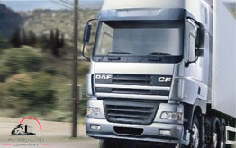

ГРУЗОПЕРЕВОЗКИ ПО УКРАИНЕ
Грузоперевозки по Украине от транспортной компании "Gruzoperevoz.org" - это, прежде всего, возможность профессионально и недорого перевезти груз по Украине. Интересно, что перевозка Украина доступна всем транспортным узлам нашего государства. Грузоперевозки Украина перевозят груз любых видов в огромных количествах! Например, если Вам необходимо по Украине: перевезти мебель или сборный груз, осуществить по Украине: квартирный переезд или перевезти офис - наша компания всегда готова решить Ваши задачи! Грузовые перевозки по Украине решают серьезные вопросы по транспортировке сложных видов груза, таких как: крупногабаритный груз, негабаритный груз и длинномерный груз. Обращаем Ваше внимание на то, что перевозки вышеуказанного груза осуществляется нашими специалистами исключительно на профессиональной основе! Автопарк специальной техники нашей организации позволяет перевезти груз по Украине различного веса и конфигурации, к примеру: 5 тонн, 10 тонн, 20 тонн, 25 тонн и более. Вам будет интересно узнать, как перевозка грузов по Украине формирует ценовую политику на транспортные услуги? Что именно предлагает логистика и транспортные компании украины относительно того, чтобы грузоперевозка по Украине была качественной и безопасной? Для начала, рассмотрим ниже основные виды транспортного груза Украины.
ГРУЗ ГРУЗОПЕРЕВОЗКИ ПО УКРАИНЕ
 Согласитесь, что груз грузоперевозки по Украине и его основные виды грузоперевозки, является важнейшей отраслью бизнеса нашего государства. Груз по Украине при помощи грузоперевозки перевозится, как правило, профессиональными транспортными компаниями. Такая транспортировка позволяет успешно решать важные задачи экономики нашего государства. Для того, чтобы грузоперевозки груза по Украине осуществить грамотно и безопасно, необходимо наличие мощной грузовой автомобильной транспортной структуры. Такая структура обеспечит грузовые потоки во всех направлениях!
Согласитесь, что груз грузоперевозки по Украине и его основные виды грузоперевозки, является важнейшей отраслью бизнеса нашего государства. Груз по Украине при помощи грузоперевозки перевозится, как правило, профессиональными транспортными компаниями. Такая транспортировка позволяет успешно решать важные задачи экономики нашего государства. Для того, чтобы грузоперевозки груза по Украине осуществить грамотно и безопасно, необходимо наличие мощной грузовой автомобильной транспортной структуры. Такая структура обеспечит грузовые потоки во всех направлениях!
перевозка украина удерживает позиции
Согласитесь, перевозка украина, как отрасль грузоперевозки различных грузов по Украине, давно заняла и прочно удерживает самые главные позиции! Украинская перевозка в полном объеме удовлетворяет все потребности населения. Ниже, мы рассмотрим наиболее распространенные по Украине виды перевозки и варианты украинского груза, перевозкой которого занимаются наши профессиональные логисты.
перевозка по украине груза
Перевозка по Украине груза всех видов и по всем направлениям свидетельствует о том, что ситема грузоперевозки развита в полном объеме. Какие же виды груза осуществляет перевозка по Украине?
грузоперевозки по украине крупногабаритного груза
Согласитесь, что сложно переоценить значение и всю сложность, которую представляет перевозка по украине груза крупногабаритного. Крупногабаритный груз и его транспортировка требует особого внимания и подхода при перевозке по дорогам Украины.
грузоперевозки по украине длинномерного груза
Знаете ли Вы, что длина длинномерного груза, как правило, превышает 20 метров. Длинномерный груз может выступать за кузов автомобиля более чем на 2 метра! Внимание! Груз длинномерный, при транспортировке по Украине, разобрать на мелкие секции нельзя (по техническим причинам)! Спрос на перевозку длинномерных грузов в Украине растет постоянно. В некоторых случаях, длинномерные грузы сопровождают специализированные автомобили прикрытия!
грузоперевозки по украине контейнерного груза
Интересно, что контейнерный рынок и перевозка по Украине груза контейнерного 10 лет назад был на пике роста! Специалисты прогнозировали, что к 2019 году оборот украинских контейнерных грузоперевозок достигнет 7 TEU млн в год. Но на контейнерооборот серьезно оказал влияние кризис 2008 года. За последние лет десять бывало, что грузоперевозка контейнеров падала ниже 700 тыс. TEU в год. Позитивная динамика появилась в 2017 году - украинский оборот перевозок груза контейнерного дотянул до миллиона.
грузоперевозки по украине негабаритного груза
Обращаем Ваше внимание на то, что перевозка по Украине негабаритного груза осуществляется только на специальном автотранспорте! Существуют определенные сложности, с которыми приходится сталкиваться перевозчикам и заказчикам негабаритного груза. Необходимо обязательно учитывать все проблемные аспекты при транспортировке негабарита, иначе могут возникнуть серьёзные проблемы!
грузоперевозки по украине сборного груза
Перевозка по Украине сборного груза — это, как правило, грузоперевозка мелкогабаритных грузов от разных заказчиков по одному направлению. В данном случае, используется одно транспортное средство. Сборный вид перевозки значительно уменьшает стоимость доставки мелких грузов, однако, сборные перевозки грузов не выгодены, когда Вам необходимо перевезти средний и крупный груз!
отследить груз украина
Вам конечно интересно, как отследить груз украина во время заказанной грузопереозки к месту назначения? Это возможно, если воспользоваться специальным сервисом нашей транпортной компании. Как же работает система по отслеживанию транспортировки украинского груза? Для этого Вам необходимо ввести на сайте специальные данные груза, а именно: номер накладной, в которой указан груз украина или номер экспедиторской рассписки (квитанции) грузоперевозки. При таком условии, Вы будете получать всю полную информацию о движении Вашего груза по заданному маршруту. Вся информация предоставляется в понятной форме! Воспользуйтесь данным сервисом и отслеживайте Ваш груз в любое время.
груз по украине водители
Груз по Украине перевозят профессиональные водители нашей фирмы! Обращаем Ваше внимание на то, что водитель транспортной компании Gruzoperevoz.org всегда имеет большой стаж работы. По Украине груз перевезти не так просто. Особенно это связано с качеством дорог. Поэтому опытные водители не нарушают скоростной режим движения транспорта и понимают, какая отвественность по доставке груза на них возложена.
грузчик грузоперевозки украина
Грузчик для грузоперевозки Украина нашей организации - это не просто выносливый и физически крепкий парень сособный таскать груз круглые сутки! Чтобы свои обязанности выполнять грамотно и профессионально, современный грузчик обязан обладать большим запасом теоретических знаний и практическими навыками. Внимание, наши грузчики, которые работают в Украина грузоперевозки, обладают отличным знанием современной техники, быстрой сообразительностью, умением четко действовать и ориентироваться исходя из всех остоятельств погрузки! И, при этом, каждый из грузчиков, должен иметь высокую коммуникабельност. Наши грузчики - лицом нашей транспортной организации! Они, как и водители, формируют репутацию Gruzoperevoz.org company.
ПОПУТНЫЙ ГРУЗ УКРАИНА
Ознакомьтесь с интересной информацией, как попутный груз и догруз Украина отличаются сборного вида груза. Так чем же отличаются попутные грузоперевозки по Украине от грузоперевозки сборной? Давайте разберемся. Главное отличие в том, что попутные грузоперевозки по дорогам Украины загружают транспортное средство исключительно при холостом пробеге. Крайне желательно, чтобы автомобиль, который уже совершил доставку груза в пункт назначения, не возвращался пустым обратно и смог бы взять груз попутно!
попутные грузоперевозки по украине оплата в одну сторону
 Попутные грузоперевозки по Украине оплата в одну сторону по всем маршрутам страны - это значительная (до минус 51%) экономия ваших средств! Что же такое оплата в одну сторону? Это означает, что Вам не надо арендовать целый автомобиль для перевозки Вашего груза! Используйте грузовой транспорт, который планирует везти груз по необходимому Вам маршруту доставки. При этом, Вы заплатите за услугу транспортировки только в одну сторону. Воспользуйтесь тарифом нашей компании "минус 51 %" на попутную перевозку груза по дорогам Украины!
Попутные грузоперевозки по Украине оплата в одну сторону по всем маршрутам страны - это значительная (до минус 51%) экономия ваших средств! Что же такое оплата в одну сторону? Это означает, что Вам не надо арендовать целый автомобиль для перевозки Вашего груза! Используйте грузовой транспорт, который планирует везти груз по необходимому Вам маршруту доставки. При этом, Вы заплатите за услугу транспортировки только в одну сторону. Воспользуйтесь тарифом нашей компании "минус 51 %" на попутную перевозку груза по дорогам Украины!
система догрузки украинской попутной грузоперевозки
Попутная грузоперевозка украинского сегмента приведет к динамичному развитию международных экономических связей. Используя возможность системы догрузки по определенному маршруту, Вы можете сократить расходную часть ваши средств на перевозку любого груза до пятидесяти процентов! При перевозке попутных грузов в любую точку Украины с использованием выгодной клиентской системы догрузки, Ваша экономия очевидна! Зачем платить больше?
ГРУЗОПЕРЕВОЗКИ ПО УКРАИНЕ ЦЕНА
Обратите внимание, что стоимость каждой грузопревозки и цена по трассам Украины рассчитывается для каждого клиента нашей транспортной компании индивидуально! При этом, прежде всего, учитываются все характеристики груза и необходимого грузового автомобиля на маршруте. Посмотрите наши цены в прайсе компании. Все ценовые расчеты стоимости ведутся на взаимовыгодных условиях!
оптимальные цены по украине на грузоперевозку
Оптимальная цена за км украинской грузоперевозки зависит от многих факторов. В нашей транспортной фирме доступны практически все виды услуг грузоперевозки с правильной расчетной стоимостью в Украине. Максимально востребованным, популярным и оптимальным видом цены на грузовые украинские перевозки всегда была и остается цена на автоперевозку.
категории украинской ценовой политики грузоперевозки
Ценовая политика на перевозку грузовую в Украине делится на три основные категории. Первая категория - это пассажирская (легковые автомобили и автобусы). Это обеспечение по оптимальным ценам перевозки внутри Украины пассажиров междугородним, внутригородским и пригородном сообщением. Вторая категория - это грузовая. К данной категории относится перевозка по доступной цене различных грузов на тралах и тягачах, а также буксировка прицепов, полуприцепов и грузовых емкостей. Третья категория - специальная. Эта категория служит для выполнения по доступной цене исполнения различных технических функций, к которым относятся: работа на бульдозере, экскаваторе, тракторе, подъемном автокране, пожарной машине, передвижном компрессоре, катке, автовышке и других видах спецтехники. Теперь становится понятным, почему цена на грузоперевозку в Украине, с использованием различного автомобильного грузового транспорта, представляет такой большой интерес. Обращаем Ваше внимание на то, что специалисты нашей команды предложат только самую оптимальную цену на все услуги перевозок по Украине грузов, а также займутся обязательным отслеживанием и контролем передвижения груза на протяжении следования до пункта назначения.
ГРУЗОПЕРЕВОЗКИ ПО УКРАИНЕ ДИСПЕТЧЕР
Важно, что диспетчер грузоперевозки по Украине – это посредник между Вами (владельцем груза) и испjлнителем (перевозчиком или транспортной компанией)! Главная задача украинского диспетчера по грузоперевозке - грамотно организовать процесс транспортировки груза от начала и до пункта назначения. Заказчику перевозки опытным диспетчером по грузоперевозкам предоставляется полная и подробная информация о транспортном средстве, а также о водителе!
функции и задачи диспетчера украинской грузоперевозки
 Грузоперевозки по Украине: диспетчер компании «Gruzoperevoz.org» качественно исполняет функции по работе с клиентом-заказчиком. Основная задача опытного диспетчера - предложить владельцу груза оптимальный маршрут транспортировки к адресу доставки. На факторы выбора диспетчером маршрута движения груза по дорогам Украины, в первую очередь, влияет качество автомобильных дорог, соединяющих административные центры и области государства. Диспетчер Gruzoperevoz.org всегда оформляет грузоперевозки с учетом честной и оптимальной ценовой политики нашей транспортной компании. А также, в обязательном порядке, предлагается страхование любого вида транспортируемого дорогами Украины груза к железнодорожными станциям, аэропортам,
морскими и речными портам, объектами культурного значения и местам отдыха.
Грузоперевозки по Украине: диспетчер компании «Gruzoperevoz.org» качественно исполняет функции по работе с клиентом-заказчиком. Основная задача опытного диспетчера - предложить владельцу груза оптимальный маршрут транспортировки к адресу доставки. На факторы выбора диспетчером маршрута движения груза по дорогам Украины, в первую очередь, влияет качество автомобильных дорог, соединяющих административные центры и области государства. Диспетчер Gruzoperevoz.org всегда оформляет грузоперевозки с учетом честной и оптимальной ценовой политики нашей транспортной компании. А также, в обязательном порядке, предлагается страхование любого вида транспортируемого дорогами Украины груза к железнодорожными станциям, аэропортам,
морскими и речными портам, объектами культурного значения и местам отдыха.
услуги по украине диспетчера грузоперевозки
Воспользуйтесь профессиональными услугами диспетчера грузоперевозок нашей организации! Диспетчер «Gruzoperevoz.org» поможет Вам ☎ выбрать оптимальный маршрут для перевозки вашего груза украиной. Наши сотрудники диспетчерского состава имеют огромный опыт в предоставлении услуг! Они имеют выдержку и максимально вежливы, а также всегда готовы оказать помощь и решить любые вопросы клиента. Обращайтесь и Вы всегда будете спокойны за Ваш груз в процессе перевозки по дорогам Украины!
ГРУЗОВЫЕ ПЕРЕВОЗКИ ПО УКРАИНЕ АВТОПАРК
Согласитесь, что собственный автопарк фирмы делает грузовые перевозки по Украине очень выгодными, т.к. они осуществляются автотранспортом из автопарка с профессиональными водителями и грузчиками. Какие же виды транспорта применяются из современных автопарков, если используются перевозки грузовые по Украине. Ознакомьтесь, пожалуйста, с информацией, которая предоставлена на странице ниже.
перевозка грузов по украине на грузовом транспорте
Правильное использование определенного вида грузового транспорта для перевозки груза дорогами Украины - немаловажный фактор успешного бизнеса! Обращаем Ваше внимание на то, что грузовой специальный транспорт в автопарке нашей логистической компании, подключен к системе попутные грузоперевозки по любому адресу в Украине. Это дает возможность экономить 50% средств наших клиентов при транспортировке груза по необходимому маршруту. Высокая маневренность и достаточная скорость грузовиков окупает все потраченные средства! Поскольку Украина имеет выгодное экономическое, географическое, а также геополитическое положение, транспортные линии грузовых потоков пронизывают практически всю территорию государства. Транспортный парк всех видов грузовых автомобилей в Украине составляет всего 37%. Как правило, для того, что бы осуществить перевозку груза по Украине, применяются грузовики и фуры, которые обеспечивают потребности в транспортировке по стране более чем на 67%! В основном, реализуются задачи по перевозке небольших грузовых партий на короткие расстояния. Это, как правило, связано с высокой себестоимостью данного вида транспорта и его небольшой грузоподъемностью. Но, не смотря на это, автотранспорт грузовой (грузовики) дает возможность доставки грузов "от двери к двери" без дополнительных затрат на его перегрузку. Как же выбрать необходимый вид грузового транспортного средства и найти машину для перевозки груза по украинским дорогам? Обратимся к нижеуказанной таблице:
| Перевозка грузов в Украине на грузовом транспорте | |||
| Перевозка грузов Украина до 700 кг. | Кузов 5-8 м3 | Ширина 1,8 м Высота 1,8 м | Длина 2-2,8 м |
| Перевозка грузов Украина до 1 т. | Кузов 1-1.5 м3 | Длина 1-1.2 м | Ширина 1 м Высота 1-1.2 м |
| Перевозка грузов Украина до 1,5 т. | Кузов 9 м3 | Длина 3 м | Ширина 1,95 м Высота 1,7-2,2 м |
| Перевозка в Украине грузов на транспорте грузовом | |||
| Перевозка украинских грузов до 2 тонн | Кузов 14-16 м3 | Длина 3,5-4 м | Ширина 1,9 м Высота 1,9-2,4 м |
| Перевозка украинских грузов до 3 тонн | Кузов 16-23 м3 | Длина 4,2-5 м | Ширина 2-2,2 м Высота 2-2,4 м |
| Перевозка украинских грузов до 5 тонн | Кузов 32-45 м3 | Длина 5,8-7,2 м | Ширина 4,5 м Высота 2,2-2,7 м |
| Перевозка: грузы украины на грузовом транспорте | |||
| Украина: перевозка грузов до 7 тонн | Кузов 36-45 м3 | Длина 6-8 м | Ширина 2,45 м Высота 2,2-2,7 м |
| Украина: перевозка грузов до 10 тонн | Кузов 32-45 м3 | Длина 6-8 м | Ширина 2,45 м Высота 2,3-2,7 м |
| Украина: перевозка грузов до 20 тонн | Кузов 82-96 м3 | Длина 13,6 м | Ширина 2,46 м Высота 2,5-3,1 м |
ПЕРЕВЕЗТИ ГРУЗ ПО УКРАИНЕ НА ГРУЗОВОМ АВТОМОБИЛЕ
| Ориентировочный вес перевозимого груза для грузового автомобиля | Коэффициент вместимости груза (европейские паллеты) |
| Перевезти груз украиной до 700 кг. | 0-1 шт. |
| Перевезти груз украиной до 1 тонны | 4 шт. |
| Перевезти груз украиной до 1,5 тонн | 4 шт. |
| Перевезти груз украиной до 2 тонн | 6 шт. |
| Перевезти груз украиной до 3 тонн | 8 шт. |
| Перевезти груз украиной до 5 тонн | 12-18 шт. |
| Перевезти груз украиной до 7 тонн | 15-18 шт. |
| Перевезти груз украиной до 10 тонн | 15-18 шт. |
| Перевезти груз украиной до 20 тонн | 33 шт. |
| Перевезти груз украиной 120 кубов (сцепки-прицеп) | 33 шт. |
| Перевезти груз быстро используя правильные технические характеристики грузового автомобиля | ||
| Размер кузова грузового автомобиля (грузовика) по категории | ||
| Категория автомобиля | Длина кузова | Ширина кузова |
| Минибус | 2,3-2,5 | 1,4-1,5 H-1,4-1,5 |
| Стандартный | 2,5-3,0 | 1,7-1,9 H-1,7-2,0 |
| Максимальный | 3,0-3,5 | 1,7-1,9 H-1,75-1,9 |
| 3 тонны | 4,3-4,5 | 1,75-1,9 H-1,9-2,0 |
| 3 тонны | 4,3-4,5 | 1,75-1,9 H-1,9-2,0 |
| 5 тонн | 5,5-6,5 | 2,2-2,5 H-2,3-2,5 |
| Главная задача - это оптимальный правильный выбор грузового автомобиля (по техническим характеристикам, удовлетворяющим весу и конфигурации груза). При таком варианте, ваши затраты на поставленную задачу по перевозке груза в Украине автомобилем будут минимальны. | ||
| Перевезти груз с минимальными затратами по дорогам Украины с учетом неиспользованного объема грузовика | |
| Объем кузова авто грузового к максимальному весу перевозимого груза | |
| Кузов (объём) | Максимальный вес груза |
| 5 + (метр/куб) | 0,8 тонн |
| 8 + (метр/куб) | 1,5 тонн |
| 12 + (метр/куб) | 2 тонны |
| 13 + (метр/куб) | 3 тонны |
| 30 + (метр/куб) | 5 тонн |
| С целью правильного выбора грузовика и точного расчета стоимости перевозки груза, потребуется знать вес и объем доставляемого груза, а также, конечный адрес доставки. | |
| Вместо веса и объема необходимого автомобильного транспорта, вам достаточно указать грузовую категорию автомобиля - (0.8 тонн, 1.5 тонны, 2 тонны, 3 тонны, 5 тонн и другие варианты). Вы можете связаться с диспетчером нашей компании любым удобным для вас способом связи для уточнения всех вопросов. | |
| Перевезти груз: Украина диспетчер ☎ ☎ ☎ | |
вилочный погрузчик грузоперевозки украины
Знаете ли Вы, что грузоперевозки украины активно используют вилочный погрузчик для оптимизации и ускорения погрузочных, а также разгрузочных работ с грузом! Управлять вилочным погрузчиком - это не управлять грузовым автомобилем. Погрузчик вилочный управляется при помощи своих задних колес! Погрузчик груза вилочный имеет нелогичное управление, так как очень громоздко распределяет свою массу нагрузки. Вилочные погрузчики грузов, в процессе грузоперевозки украины, могут потребоваться в зависимости от места предполагаемой работы грузчиков. Для работы на такой техники, необходимо пройти специальное обучение.
грузоперевозка по украине используя тягач
Один из самых главных факторов, если осуществляется грузоперевозка по украине машиной тягач с полуприцепом - это обязательное учитывание все длинны машины-тягача. Опытный водитель тягочей никогда не забывает смотреть по зеркалам! Вся сложность грузоперевозки на тягоче в том, что помимо самой машины тягача есть ещё и специальный полуприцеп. А полуприцепы, при грузоперевозке трассами Украины, имеют свою определённую траекторию движения. Поэтому, водитель со стажем, при повороте, всегда берёт радиус несколько больше обычного. В таком случае, грузоперевозка на тягоче по Украине является безопасной.
ТРАНСПОРТНЫЕ КОМПАНИИ УКРАИНЫ
Транспортные компании Украины предлагают многоцелевой спектр различных услуг относительно, грузоперевозки по Украине. Однако, качество услуг и ценовая политика предлагаемых мероприятий по транспортировке груза, не всегда отвечает требованиям профессионализма и качества! Выбор, естественно, остается за Вами - какая транспортная компания Украины вызывает Ваше доверие? Какой транспортной компании Вы поручите перевозку своего важного груза? И, просим обратить внимание на то, что высокая цена за услуги от различных украинских транспортных компаний, ещё совсем не говорит о их высоком качестве. Компания Gruzoperevoz.org company работает на высоком уровне профессионализма. Вам остается только сообщить - откуда и куда перевезти Ваш груз, а всё остальное мы сделаем сами! Удачной грузоперевозки по Украине!
-
офис-менеджер
044 530 50 11 -
менеджер
066 257 33 25менеджер
098 721 52 57
ЕСЛИ ВАМ НЕОБХОДИМО СДЕЛАТЬ ЗАКАЗ ИЛИ ЖЕ У ВАС ВОЗНИКЛИ ВОПРОСЫ ОТНОСИТЕЛЬНО ГРУЗОПЕРЕВОЗКИ ПО УКРАИНЕ, СВЯЖИТЕСЬ С МЕНЕДЖЕРАМИ НАШЕЙ КОМПАНИИ В ЛЮБОЕ УДОБНОЕ ДЛЯ ВАС ВРЕМЯ ПО ВЫШЕУКАЗАННЫМ ТЕЛЕФОНАМ ИЛИ НАПИШИТЕ НАШЕМУ МЕНЕДЖЕРУ, ЗАПОЛНИВ УДОБНУЮ ФОРМУ НА САЙТЕ.